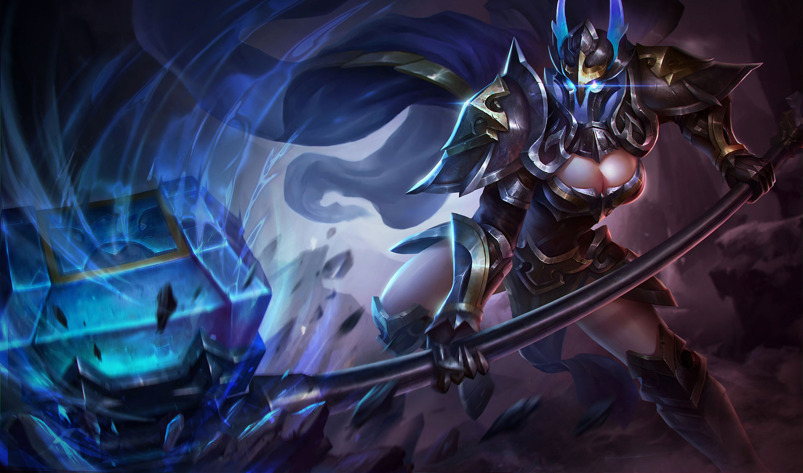

TAARA
Tiểu sử
Dãy Núi Thép nằm sừng sững ở đất Bắc xa xôi, bao quanh Cung điện ánh sáng như một bức tường bằng sắt. Dãy núi nổi tiếng này được biết đến với các mỏ quặng kim loại, vốn là nguồn năng lượng chính của giới chức sắc trong Cung điện ánh sáng.
Là một nhóm người đến với vùng đất này, Cung điện ánh sáng trực tiếp điều khiển tất cả những người theo tín hữu của họ. Bộ tộc do Taara dẫn đầu đã đạt được nhiều thành tích trong thời kỳ chiến tranh. Mặc dù họ còn thiếu những kỹ năng chế tác cần thiết để chế tạo vũ khí, họ vẫn nắm giữ những chiếc búa quyền năng và đẩy lùi mọi cuộc tấn công dưới chân núi. Những dòng sông máu cứ chảy, bộ lạc của Taara phải trả cái giá quá đắt. Tuy nhiên, khi gần như thất thế khắp Núi Thép, ý nghĩa bỏ cuộc vẫn không xuất hiện trong đầu Taara.
Trong ngày ánh sáng hồi sinh, Taara cùng các bộ lạc tổ chức một bữa tiệc linh đình. Họ thắp lên ngọc lửa sáng sâu trong những ngọn núi và đốt lên những cột lửa sáng lóa. Các sứ giả của Thane đến, mang tới mệnh lệnh từ vị vua đáng kính: Vì sự trung thành của Taara trong chiến tranh, cô xứng đáng được trao danh hiệu cao quý. Cô sở hữu một vùng đất rộng lớn trong vương quốc mới và cả bộ lạc cuối cùng cũng thoát khỏi cảnh nghèo đói.
Tuy nhiên, trước khi Taara có thể lên kế hoạch cho những điều mới mẻ, sự giận dữ của Gildur đã lan đến Sông Thép. Nắm giữ ngân khố của Cung điện ánh sáng, Gildur biết rằng tăng dân số là tăng khả năng sản xuất, và ông không cho phép Thane tự ý đưa thêm người vào Cung điện. Người đưa tin của Thane bị lưu đày, Taara bị coi như là kẻ phản bội niềm tin và bị bỏ tù. Ngoài ra, các khoản thuế áp dụng với bộ lạc của cô bị tăng gấp đôi trong 10 như một hình phạt thích đáng.
Mọi thứ quay ngoắt 180 độ, Taara như rơi thẳng từ thiên đàng xuống địa ngục. Veera, gián điệp bóng đêm, nắm lấy cơ hội và giải cứu Taara, và để lại lời nhắn: "Những vị thần Ánh Sáng đã khiến cô gục ngã, tại sao cô không nắm lấy Bóng Tối thật sự?". Thất vọng vì những gì Cung điện ánh sáng đối xử với cô, Taara đã tự gieo mình xuống vực thẳm. Cô sẵn sàng bị dầy vò bởi lửa băng, và dâng linh hồn mình cho bóng đêm.
"Ta chỉ dựa vào sức mạnh mà ta có trong tay!"
Là một nhóm người đến với vùng đất này, Cung điện ánh sáng trực tiếp điều khiển tất cả những người theo tín hữu của họ. Bộ tộc do Taara dẫn đầu đã đạt được nhiều thành tích trong thời kỳ chiến tranh. Mặc dù họ còn thiếu những kỹ năng chế tác cần thiết để chế tạo vũ khí, họ vẫn nắm giữ những chiếc búa quyền năng và đẩy lùi mọi cuộc tấn công dưới chân núi. Những dòng sông máu cứ chảy, bộ lạc của Taara phải trả cái giá quá đắt. Tuy nhiên, khi gần như thất thế khắp Núi Thép, ý nghĩa bỏ cuộc vẫn không xuất hiện trong đầu Taara.
Trong ngày ánh sáng hồi sinh, Taara cùng các bộ lạc tổ chức một bữa tiệc linh đình. Họ thắp lên ngọc lửa sáng sâu trong những ngọn núi và đốt lên những cột lửa sáng lóa. Các sứ giả của Thane đến, mang tới mệnh lệnh từ vị vua đáng kính: Vì sự trung thành của Taara trong chiến tranh, cô xứng đáng được trao danh hiệu cao quý. Cô sở hữu một vùng đất rộng lớn trong vương quốc mới và cả bộ lạc cuối cùng cũng thoát khỏi cảnh nghèo đói.
Tuy nhiên, trước khi Taara có thể lên kế hoạch cho những điều mới mẻ, sự giận dữ của Gildur đã lan đến Sông Thép. Nắm giữ ngân khố của Cung điện ánh sáng, Gildur biết rằng tăng dân số là tăng khả năng sản xuất, và ông không cho phép Thane tự ý đưa thêm người vào Cung điện. Người đưa tin của Thane bị lưu đày, Taara bị coi như là kẻ phản bội niềm tin và bị bỏ tù. Ngoài ra, các khoản thuế áp dụng với bộ lạc của cô bị tăng gấp đôi trong 10 như một hình phạt thích đáng.
Mọi thứ quay ngoắt 180 độ, Taara như rơi thẳng từ thiên đàng xuống địa ngục. Veera, gián điệp bóng đêm, nắm lấy cơ hội và giải cứu Taara, và để lại lời nhắn: "Những vị thần Ánh Sáng đã khiến cô gục ngã, tại sao cô không nắm lấy Bóng Tối thật sự?". Thất vọng vì những gì Cung điện ánh sáng đối xử với cô, Taara đã tự gieo mình xuống vực thẳm. Cô sẵn sàng bị dầy vò bởi lửa băng, và dâng linh hồn mình cho bóng đêm.
"Ta chỉ dựa vào sức mạnh mà ta có trong tay!"
CÔNG TY CỔ PHẦN GIẢI TRÍ VÀ THỂ THAO ĐIỆN TỬ VIỆT NAM
Văn phòng đại diện: Tầng 29, tòa nhà Trung tâm Lotte Hà Nội, số 54, đường Liễu Giai, Phường Cống Vị, Quận Ba Đình,
Thành phố Hà Nội, Việt Nam
Điện thoại: (04)7305-3939 | Fax: (04)3759-2429